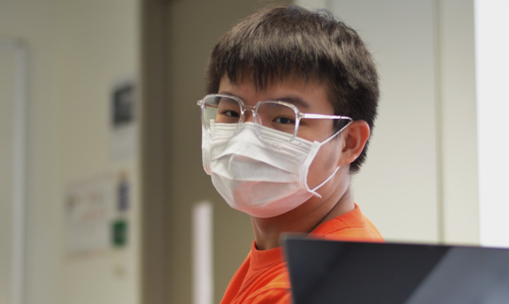

Hi! I am Hong Yi, a student currently undertaking the Common ICT Programme in Singapore Polytechnic. I am aged 16, and am a alumni of Swiss Cottage Secondary. I also have a passion for history and technology, and dream of being a data scientist in the future. Furthermore, I also have interests in photography and tanks. I would describe myself as passionate about my work, using it as a steady source of motivation to push me to do my best in anything I undertake.
